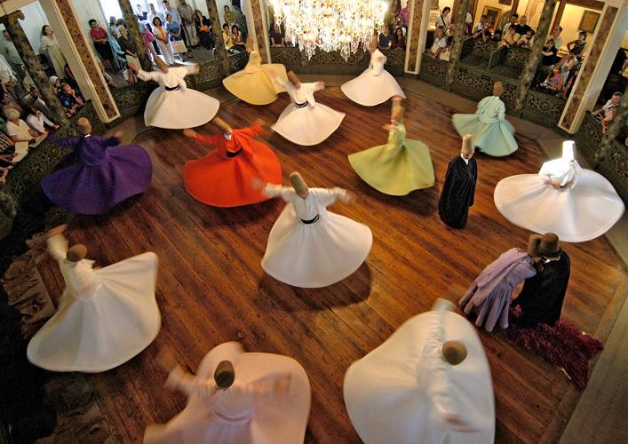
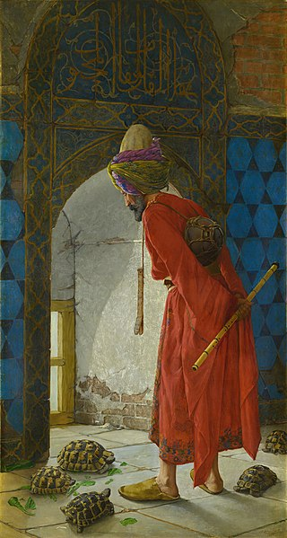
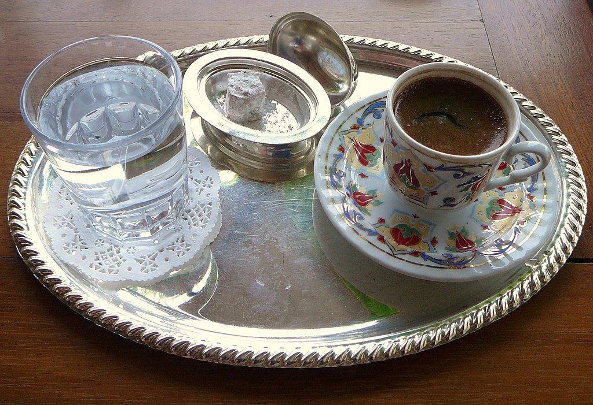
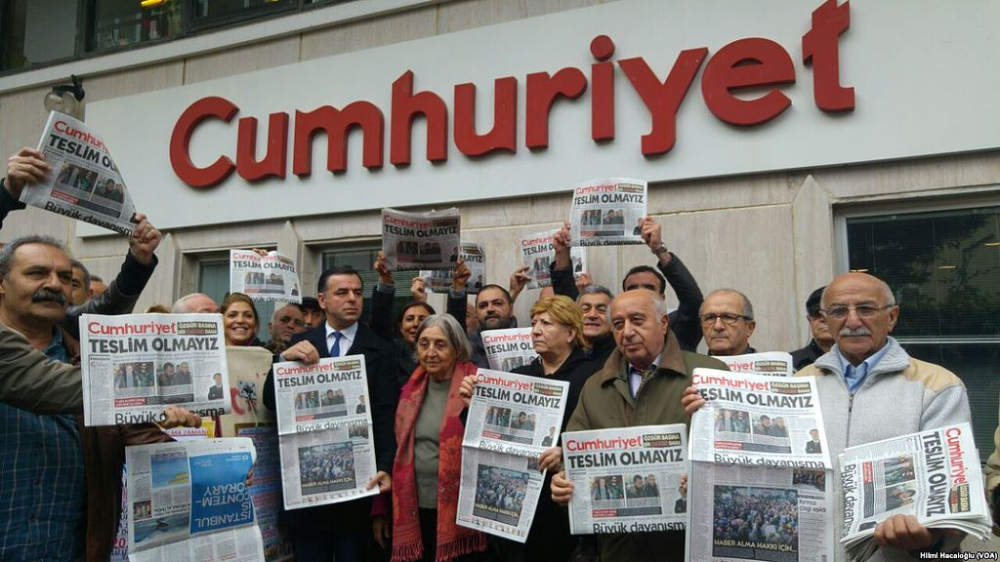
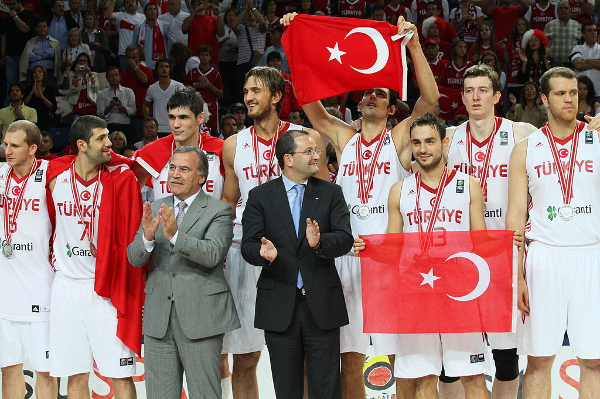

Kültür
Türkiye; Oğuz, Anadolu, Osmanlı (Greko-Romen ve İslami kültürlerin bir devamıydı) ve Batı kültürleri ile geleneklerinin karışımıyla ortaya çıkan çok çeşitli kültürleri barındırır. Ülke coğrafyasındaki kültürel kaynaşma, Orta Asya'dan Anadolu'ya doğru gerçekleşen Türk göçleri sırasında Türklerin göç yolları üzerindeki kültürlerle kendi kültürlerini birleştirmesi sonucunda başladı. Ülkedeki Batılılaşma hareketi ise Osmanlı İmparatorluğu'nun Tanzimat döneminde başladı ve bugüne kadar sürmeye devam etti. Sonuç olarak günümüz Türk kültürü, geleneksel inançları ve tarihi değerleri koruyarak "çağdaş" bir Batı devleti olma çabası sonucunda şekillendi.
Mevlevi semazenler bir Sema törenindeyken. Mevlevi Sema Törenleri, UNESCO Somut Olmayan Kültürel Miras Listeleri'nde yer almaktadır.
Sanat
Batılı anlamda Türk resim sanatı, 19. yüzyılın ortalarından itibaren etkin bir gelişme göstermeye başladı. Resim dersleri ilk olarak teknik ihtiyaçlar için 1793 yılında şu anki İstanbul Teknik Üniversitesi'nde verilmeye başlandı. 19. yüzyılın sonlarında, Batılı anlamda insan tasvirleri özellikle Osman Hamdi Bey ile birlikte Türk resminde kullanılmaya başlandı. Çağdaş eğilimlerle birlikte empresyonizm de gelişim gösterdi ve Halil Paşa resimlerinde empresyonizmi kullandı. 1926'da Avrupa'ya gönderilen Türk sanatçılar, Türkiye'ye geri döndüklerinde çalışmalarında Fovizm, Kübizm ve hatta Ekspresyonizm akımlarından yararlandılar. Sonraki yıllarda D Grubu sanatçılarından Abidin Dino ve Cemal Tollu dahil olmak üzere Fikret Mualla, Fahrelnisa Zeid, Bedri Rahmi Eyüboğlu, Adnan Çoker ve Burhan Doğançay gibi sanatçılar son 30 yıl boyunca Batı'da gelişen bazı eğilimleri tanıttılar. Bunların yanı sıra Yeniler Grubu 1930'larda, Onlar Grubu 1940'larda, Yeni Dal Grubu 1950'lerde ve Siyah Kalem Grubu 1960'larda ortaya çıkarak çağdaş Türk resminin diğer önemli hareketleri olarak tanındılar.
Türk müziği ve edebiyatı, çeşitli kültürlerin izlerini taşır. Osmanlı İmparatorluğu'nun yanı sıra İslam dünyası ile Avrupa'nın etkileşimi sonucunda Türk, İslam ve Avrupa gelenekleri birleşerek günümüz Türk müziğini ve edebiyatını ortaya çıkarmıştır. Osmanlı döneminde Türk edebiyatı, İran ve Arap edebiyatlarının fazlasıyla etkisi altında kaldı. Tanzimat'taki yeniliklerle birlikte daha önceden bilinmeyen roman ve öykü gibi edebi türler Türk edebiyatına giriş yaptı. Çeşitli yazarlar Türk edebiyatındaki ilkleri bu dönemde verdiler; Namık Kemal ilk edebi roman olan İntibah'ı (1876) yazarken, gazeteci Şinasi ilk özel gazeteyi çıkardı ve ilk tiyatro olan Şair Evlenmesi'ni (1860) yazdı. Batı etkisinde gelişen modern Türk edebiyatının şekillenmesi 1896 ve 1923 arasında da sürdü. Bu arada Servet-i Fünûn, Fecr-i Ati ve Millî Edebiyat gibi çeşitli edebiyat hareketleri ortaya çıktı. 20. yüzyılda Nâzım Hikmet, serbest nazımla şiirler yazarak Türk şiirine radikal değişikler getirdi. Şiirdeki bir başka devrim ise 1941'de Garipçiler tarafından yapıldı. Çeşitli kültürlerin karışımı olan Türk edebiyatında, bu durumun bir sonucu olarak, işlenen konular arasında kültür çatışması önemli bir yer tutar. Örneğin romanlarında "kültürlerin birbiriyle çatışması ve örülmesi için yeni simgeler bulan" Orhan Pamuk, 2006 yılında Nobel Edebiyat Ödülü'ne layık görülmüştür. 2003 Eurovision Şarkı Yarışması'na Türk müziğindeki çeşitli kültürlerin izlerini taşıyan "Everyway That I Can" şarkısıyla katılan Sertab Erener ise yarışmanın birincisi olarak Avrupa'da adından bahsettirmiştir.
Türk kültüründe halk oyunları önemli bir yer tutar. Doğu Trakya'da Hora; Ege, Güney Marmara ve İç Anadolu'da Zeybek; Batı Akdeniz'de Teke; İç-Batı Anadolu, Batı Karadeniz, Güney Marmara ve Doğu Akdeniz'de Kaşık oyunları ile Karşılama; Orta ve Doğu Karadeniz'de Horon; Doğu ve İç Anadolu'da Halay; Kuzeydoğu Anadolu'da Bar ve Lezginka halk oyunları yaygındır.
Osman Hamdi Bey'in çizdiği Kaplumbağa Terbiyecisi
Mutfak
Türk mutfağı, Çin ve Fransız mutfaklarıyla beraber dünyanın en zengin mutfaklarındandır. Coğrafyası ve tarihi gereği, Türk mutfağı çok büyük bir çeşitlilik oluşturur. Türk mutfağı, Mezopotamya ve Balkan mutfaklarıyla etkileşime girmiştir, İstanbul Osmanlı Saray mutfağı da Türk mutfağının önemli bir kısmını oluşturur.
Osmanlı Saray Mutfağı'nda çok çeşitli çorba, zeytinyağlı sebze, etli yemek, balık, börek, tatlı mönüleri mevcuttur. Saray mutfağı, Bizans İmparatorluğu'ndan Osmanlı'ya yüzyılların saray zevki ve tecrübesiyle oluşan elit bir mutfaktır. O dönemlerde, halk ve köy mutfağı ise sade ve basittir.
Günümüzde, Saray kültürü ile halk kültürünün karışımı bir "Türk mutfağı" ortaya çıkmıştır. Birçok saray yemeği, halk tarafından benimsenmiştir.
Türk mutfağı;
- Akdeniz kültürü
- Doğu kültürü
- Saray kültürü
- Bozkır kültürü olarak sınıflandırılmıştır.
Türk lokumu ile birlikte Türk kahvesi. Türk kahvesi, UNESCO tarafından Türklerin Somut Olmayan Kültürel Miraslar listesine alınmıştır.
Medya
Yüzlerce televizyon kanalı, binlerce yerel ve ulusal radyo istasyonu, onlarca gazetesi, kâr sağlayan üretken yerli sineması ve hızlı büyüyen geniş bant internet kullanımı ile Türkiye'nin oldukça canlı bir medya sektörü vardır. 2014 yılında ülkede faal durumda olan radyo ve televizyon kurumu sayısı 1.190 olarak açıklanmıştır. Bunlardan %77,7'si karasal yayın yaparken geriye kalanı sadece uydu, kablolu veya internet üzerinden yayın yapmıştır. Devlet kanalı TRT ile Kanal D, Show TV, Atv ve Star TV gibi özel kanallar, izleyici tarafından en çok takip edilen kanallardır. Bu kanallarda gösterilen televizyon dizileri, Türkiye sınırlarının dışında son yıllarda popülerleşmeye başlayarak ülkenin dış ilişkilerine ve tanınırlığına katkı sağlamaktadır. Ülkedeki yayın kuruluşları, uydu antenleri ve kablo sistemi ile geniş bir alana yayılarak erişilebilir hâle gelmiştir. Radyo ve Televizyon Üst Kurulu (RTÜK), ülkenin televizyon ve radyolarını hükûmet gözetiminde denetleyen yetkili kuruluştur. Tiraj rakamlarına göre ülkenin en popüler ilk beş gazetesi Hürriyet, Sabah, Posta, Sözcü ve Habertürk'tür. Freedom House, Türkiye'de basından "Özgür Değil" şeklinde bahsederken internet ortamından "Kısmen Özgür" şeklinde bahseder.
Cumhuriyet yazarlarının tutuklanması protesto ediliyor. Türkiye'de basın özgürlüğü tartışmalı bir konudur.
Spor
Türkiye'de en çok sevilen sporlardan biri futboldur. Futbol ligler halinde oynanmakta ve bunların en büyüğü Süper Lig'dir. Lig şampiyonu olabilmiş olan takımların dördü (Galatasaray, Fenerbahçe, Beşiktaş ve İstanbul Başakşehir) İstanbul takımı, iki tanesi (Trabzonspor ve Bursaspor) ise Anadolu takımıdır. Futbol kulüpleri Türkiye Futbol Federasyonu çatısı altında toplanmıştır. Galatasaray Avrupa'da kupa kazanan ilk ve tek Türk futbol takımıdır. 2000 yılında UEFA Kupası ve UEFA Süper Kupası'nı kazanmıştır. Türkiye millî futbol takımı 2000 Avrupa Futbol Şampiyonasında altıncı, 2002 FIFA Dünya Kupası'nda ve 2003 FIFA Konfederasyonlar Kupası'nda üçüncü olmuş, 2008 Avrupa Futbol Şampiyonasında yarı final oynamıştır.
Basketbol Türkiye'de en çok ilgi gören sporlardan biridir. Basketbol'un en büyük ligi Basketbol Süper Ligi'dir. Anadolu Efes, Fenerbahçe, Galatasaray Medical Park, Beşiktaş ve Pınar Karşıyaka gibi takımlar EuroLeague'de, Basketbol Şampiyonlar Ligi ve diğer özel turnuvalarda çok büyük başarılar göstermişlerdir. Ayrıca Anadolu Efes 1996 yılında Koraç Kupası'nı kazanarak, Avrupa Kupası kazanan ilk Türk takımı olma unvanını elde etmiştir. 2012 yılında FIBA EuroChallenge Şampiyonluğu kupasını kazanan Beşiktaş Milangaz Avrupa'da kupa kazanabilen ikinci Türk takımıdır. Fenerbahçe, 2017 yılında EuroLeague kupasını kazanarak Avrupa Kupalarında spor kulüplerinin kazanabileceği en büyük kupayı kazanan ilk Türk erkek basketbol takımı olmuştur. Ayrıca Anadolu Efes de 2021 ve 2022 yılında EuroLeague kupasını kazanmıştır. Türkiye millî basketbol takımı da turnuvalarda büyük başarı elde etmiştir. Örneğin 2001 Avrupa Basketbol Şampiyonası gümüş madalya ve 2010 FIBA Dünya Basketbol Şampiyonası gümüş gibi. 2010 FIBA Dünya Basketbol Şampiyonası, 28 Ağustos ve 12 Eylül tarihleri arasında Türkiye'de gerçekleştirilmiştir. Şampiyonayı FIBA, Türkiye Basketbol Federasyonu ve 2010 Organizasyon Komitesi ortaklaşa organize etmiştir ve ikinci olmuştur. 1986'dan beri üçüncü defa 24 ülkenin katıldığı turnuvanın takım karşılaşmaları İstanbul, Ankara, İzmir ve Kayseri'de, bitiş aşaması İstanbul Sinan Erdem Spor Salonu'nda oynanmış, kazanan ise bitişte Türkiye'yi 64-81 mağlup eden Amerika Birleşik Devletleri olmuştur. Türkiye kadın millî basketbol takımı 2011 Avrupa Kadınlar Şampiyonası'nda ikinci olmuştur. Ayrıca 2013 Akdeniz Oyunlarında erkek millî basketbol takımı altın madalya almıştır.
Geleneksel bir Türk sporu olan güreşin en önemli karşılaşması Kırkpınar Yağlı Güreşleri'dir. Türklerin MÖ 4. yüzyıldan beri güreş yaptıkları bilinmektedir. İlkbahar aylarında doğanın canlanışı için yapılan kutlamalarda, evlenme merasimlerinde, zafer şölenlerinde hep güreş müsabakaları yapılırdı. 1996 yılında Geleneksel Spor Dalları Federasyonu kurulmuş ve yağlı güreş için önemli bir adım atılmıştır.
Türkiye millî basketbol takımı 2010 FIBA Dünya Basketbol Şampiyonası'nda gümüş madalya kazandı.
